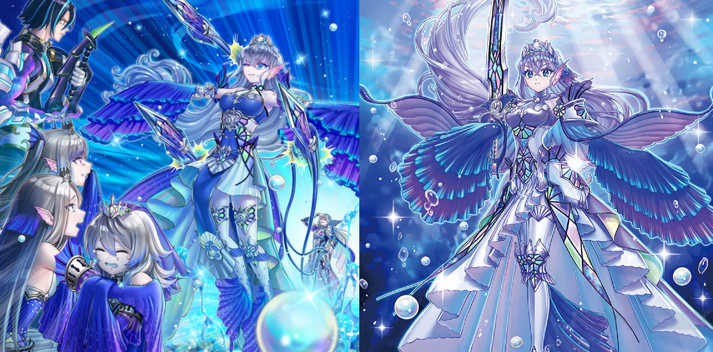

In a space where everything was enveloped in deep darkness, a glitter indescribable as a birth nor an ending bursted open. Green, blue, red... with the passage of time, among the various planets that increased this glitter, a small blue glitter became a planet and began pouring over the green planet.
A world where creatures that were the embodiment of fear itself, the "Scareclaws", lived. These creatures clashed against each other by turning their respective fright into power, until the loser fell prostrate. "Reichheart", the king controlling all fear, forced these beasts to fight to ensure their evolution. A blue ball of light fell on that planet. And the one emerging from it was a man with a strange-looking right arm that contained the glitter of the stars.
"Reichheart" instinctively inferred the goals of this suspicious man, who had no light in his eyes but possibly had a sense of self: that is, the man had set his sights on him. He was completely different from that red vanguard who occasionally appeared. Resolving he would not give up the 'self' he had obtained, the king transformed into an amalgamation of fear and challenged the man to combat.
At the end of this fierce fight, the king became a glittering star in the man's right arm. And a light of consciousness appeared in the eyes of the man who had just recovered one of his emotions. The man started remembering but a fraction of his existence:
1. He was split into a number of 'emotions' by someone.
2. The split entities were running rampart according to their core emotion.
3. His own name was "Visas".
The beasts celebrated their new king, as he departed to a new world in order to rebuild his true self.
Visas travels through the open space searching for his next destination. Hearing a voice, Visas finds Reichheart with him, this time in the form of Scareclaw Light-Heart. This new form of Reichheart leads Visas to his next destination, the Primeval Planet Perlereino.
The destination where he was leading was a blue planet enveloped by oceans and pearls: "Perlereino". The mermaids who lived there, the "Tearlaments", were wary of the arrival of "Visas", who had the same face as their master.
"Visas" inquired about this world, and the different aura from "Reichphobia" he was feeling. But instead, the mermaids answered that their master was looking for 'tears' to become immortal.
However, their master "Reinoheart", the split entity of 'sorrow', perceived this as a betrayal. The master suddenly appeared in front of "Visas" alongside their princess Kitkallos, transformed into a grotesque form, and brainwashed the mermaids.
"Visas" made his move through a series of cleverly-coordinated attacks. During the attacks, "Light-Heart" proposed "Visas" to use the power of 'fear' to clash against the 'sorrow' that was brainwashing the mermaids in order to save them. The 'sorrow' of the princess of the mermaids, "Kitkallos", was canceled out with 'fear', removing her brainwashing and transforming her into Rulkallos, and with a single attack from her, "Reinoheart" was defeated.

Even with the part of power from "Reinoheart" inherited by "Visas", he was still incomplete. As he held out his hand to unify with him, "Reinoheart" disappeared without a trace in a flash of red light.
The red flash was the elite of the "Kashtira" military corps: "Unicorn". They were biding their time for a chance to take away "Reinoheart". Pushed by their reluctance to give "Reinoheart" back, "Visas" began his pursuit after "Unicorn".
Free from the locks of Reinoheart and his tyrannical rule, Scheiren, Merrli, and Havnis are free to act as they wish. However, their new queen is nowhere to be seen...
What he found as he chased after "Unicorn" was "Shangri-Ira", the red celestial body of the "Kashtira" that was attacking "Reichphobia".
To the sadness of "Reichheart", as they avoided the bombardment and entered "Reichphobia", the planet had been dyed red beyond recognition. "Visas" planned to work together with the beasts to defeat the invaders and absorb them in order to power up, but reversing the situation was going to take time. The stolen "Reinoheart" also weighed on his mind. As they began to feel impatient, "Unicorn", carrying the machine used to contain "Reinoheart", and a mysterious figure appeared in front of them.
The man who appeared in front of "Visas" was the split entity mad with 'anger', "Riseheart", who asserted he was the real "Visas". And then, he accomplished what otherwise should have been impossible between split entities by making use of the machine, absorbing the power of "Reinoheart" and abruptly began evolving.
With the power he obtained, "Riseheart" completed the invasion started by "Shangri-Ira" and manifested the red world "Wraitsoth". By wearing the armor of the warriors, "Arise-Heart" obtained a power similar to "Visas", and he also absorbed "Reichheart".
"Visas" was at the brink of despair, when he decided to follow the last words of "Reichheart" and tried taking the power of the planet itself as his own. And then, by gathering the powers of 'anger', 'sorrow', and 'fear' in his right arm, "Visas" was granted enough power to achieve victory, and also to bring about annihilation.
As the consciousness of "Visas" became unstable due to his emotions, "Riseheart" fused with him and made him go berserk. As a result, the destroyer "Vicious", absorbed by a sea of negative emotions, was born. His goal was to destroy everything, even himself. However, at the very depths of his consciousness, something with the intent to contain that destructive impulse was present.
It was "Riumheart": the guardian of the Shangri-La "Calarium" who slumbers in the depths of the consciousness that not even "Visas" was aware of. At the great tree in this Shangri-La there were small bodies of energy known as "Mannadiums", freed from negative emotions and wrapped with joy, which had the power to help one reincarnate.
As "Vicious" was about to destroy this world of consciousness, the "Mannadiums" split from the great tree, having prepared to going extinct. They entrusted their remaining energy to "Riumheart". Through this power, the guardian completed his transformation into "Prime-Heart", rising up to return "Visas" to normal.
In order to return "Visas" to his original state, "Prime-Heart" tried to unify with "Vicious", in the same way "Riseheart" mysteriously did before. With a desperate attack, the rampage of "Vicious" was stopped, but the gentle guardian vanished as a result.